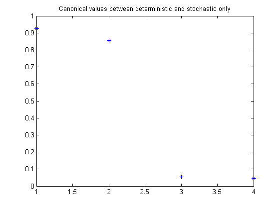
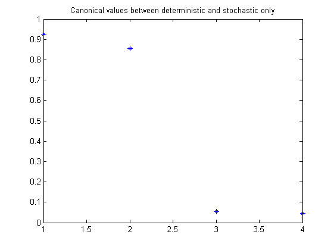

Contents
Example: Example from Reynders
close all; clear; clc;
LTI model
% LTI system matrices h = 1; % Sample time n = 4; % number of states A22 = [0.5321 0.8349; -0.8349 0.5231]; A33 = [-0.9165 0.1313; -0.1313 -0.9615]; B2 = [0.0012; 0.0007]; C2 = [-0.0267 2.6723]; C3 = [-0.0792 7.9236]; D = -0.008; K2 = [0.0060; 0.0009]; K3 = [0.0242; -0.1218]; A = [A22 K2*C3; zeros(2) A33]; B = [B2; zeros(2,1)]; K = [K2; K3]; C = [C2 C3]; % open-loop system OL = ss(A,[B K],C,[D eye(1)],1);
Open-loop identification experiment
Simulation of the model in open loop
% input signals N = 10000; % number of samples t = (0:N-1)'; % time samples u = 1000*randn(N,1); % excitation signal % noise e = randn(N,1); % noise signal % simulation y0 = lsim(OL,[u zeros(N,1)],t); y = lsim(OL,[u e],t); disp('Signal to noise ratio (SNR) (open-loop)') snr(y,y0) % Defining a number of constants p = 15; % past window size f = 15; % future window size [u,Du,y,Dy] = sigscale(u,y); % signal scaling % PBSID-opt [S,x] = dordvarx(u,y,f,p,'tikh','gcv'); figure, semilogy(S,'x'); title('Singular values') x = dmodx(x,n); [Ai,Bi,Ci,Di,Ki] = dx2abcdk(x,u,y,f,p); Dat = iddata(y',u',h); Mi = abcdk2idss(Dat,Ai,Bi,Ci,Di,Ki); Mi % Variance-accounted-for (by Kalman filter) yest = predict(Mi,Dat); x0 = findstates(Mi,Dat); disp('VAF of identified system') vaf(y,yest.y) % PBSID-opt (greybox) [S,x,xd,xs] = dordvarx_grey(u,y,f,p,'tikh','gcv'); figure, semilogy(S,'x'); title('Singular values'); [x,R1,R2,R3] = dmodx_grey(x,xd,xs,n,2,4); figure, plot(R1,'*'); title('Canonical values between full state and deterministic only'); figure, plot(R2,'*'); title('Canonical values between full state and stochastic only'); figure, plot(R3,'*'); title('Canonical values between deterministic and stochastic only'); [Ap,Bp,Cp,Dp,Kp] = dx2abcdk(x,u,y,f,p); Dat = iddata(y',u',h); Mp = abcdk2idss(Dat,Ap,Bp,Cp,Dp,Kp); Mp % Variance-accounted-for (by Kalman filter) yest = predict(Mp,Dat); x0 = findstates(Mp,Dat); disp('VAF of identified system') vaf(y,yest.y)
Signal to noise ratio (SNR) (open-loop)
ans =
17.4062
State-space model: x(t+Ts) = A x(t) + B u(t) + K e(t)
y(t) = C x(t) + D u(t) + e(t)
A =
x1 x2 x3 x4
x1 0.51518 -0.83698 0.010729 -0.050514
x2 0.83289 0.53982 0.0089433 -0.02801
x3 0.0012153 -0.00039965 -0.97023 -0.26433
x4 -0.0016516 0.00088268 0.13543 -0.96658
B =
u1
x1 -0.02301
x2 -0.014251
x3 0.0014799
x4 0.00079533
C =
x1 x2 x3 x4
y1 -6.3747 3.427 2.8118 0.72174
D =
u1
y1 -0.42905
K =
y1
x1 -0.023525
x2 -0.012381
x3 -0.079619
x4 -0.049436
x(0) =
x1 0.00060748
x2 -0.00096233
x3 0.017172
x4 0.022878
Estimated using PBSIDopt from data set Dat
Loss function 0.0065966 and FPE 0.00663486
Sampling interval: 1
VAF of identified system
ans =
99.3403
Warning: Y is not full rank.
State-space model: x(t+Ts) = A x(t) + B u(t) + K e(t)
y(t) = C x(t) + D u(t) + e(t)
A =
x1 x2 x3 x4
x1 0.51663 -0.83786 -0.043114 -0.05224
x2 0.83268 0.53981 -0.019834 -0.037556
x3 0.020949 -0.0094696 -0.86688 -0.23178
x4 0.01322 -0.0068769 0.20412 -0.83112
B =
u1
x1 -0.021548
x2 -0.014234
x3 0.016234
x4 0.0091957
C =
x1 x2 x3 x4
y1 -6.3855 3.4277 1.589 0.17497
D =
u1
y1 -0.42804
K =
y1
x1 -0.027462
x2 -0.01823
x3 -0.042363
x4 -0.0092331
x(0) =
x1 0.0030623
x2 -0.00065717
x3 0.011354
x4 0.10385
Estimated using PBSIDopt from data set Dat
Loss function 0.0175901 and FPE 0.0176921
Sampling interval: 1
VAF of identified system
ans =
98.2408
 
 Identification results
% Plot eigenvalues figure hold on title('poles of identified LTI systems') [cx,cy] = pol2cart(linspace(0,2*pi),ones(1,100)); plot(cx,cy,'k'); plot(real(eig(OL.a)),imag(eig(OL.a)),'k+','LineWidth',0.1,'MarkerEdgeColor','k', 'MarkerFaceColor','k', 'MarkerSize',10); plot(real(eig(Mi.a)),imag(eig(Mi.a)),'rx'); plot(real(eig(Mp.a)),imag(eig(Mp.a)),'gx'); axis([-1 1 -1 1]); axis square legend('STABBND','TRUE','PBSID-opt','GREY','Location','East'); hold off % Bodediagram (open loop) OLi = ss(Mi); OLp = ss(Mp); OLi = Dy*OLi*inv([Du 0; 0 1]); OLp = Dy*OLp*inv([Du 0; 0 1]); figure, bodemag(OL(1,1),'k',OLi(1,1),'r',OLp(1,1),'g'); figure, bodemag(OL(1,2),'k',OLi(1,2),'r',OLp(1,2),'g');